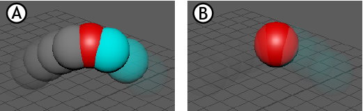

使用重影编辑器(Ghosting Editor)，可以将更改应用于场景中的所有重影。使用“重影编辑器”(Ghosting Editor)，可以一个一个或一组一组地编辑每个重影属性。
对场景中的元素应用重影
- 在“动画”(Animation)菜单集 (F4) 中选择“可视化 > 打开重影编辑器”(Visualize > Open Ghosting Editor)。此时将打开“重影编辑器”(Ghosting Editor)。
- 在“重影设置”(Ghosting Settings)区域中，选择要应用重影的“对象类型”(Object Type)：“几何体”(Geometry)
 、“关节”(Joints)
、“关节”(Joints)  或“定位器”(Locators)
或“定位器”(Locators)  。如果要在重影预览中包括整个绑定层级，请激活“包括层级”(Include Hierarchy)。
。如果要在重影预览中包括整个绑定层级，请激活“包括层级”(Include Hierarchy)。
- 单击“从当前选择创建重影”(Create Ghost from Selection)，之后将填充“重影对象”(Ghosted Objects)列表。
- 使用“重影”(Ghost)选项可以选择重影显示方式，如在动画前显示、在动画后显示或在动画前后显示；在“帧步长”(Frame Step)区域中可以选择在每一帧、每两帧、每五帧等之后显示重影。
使用其他对象驱动重影
- 使用以下 MEL 脚本，在节点编辑器(Node Editor)中将对象设置为重影驱动者：
connectAttr <driver>.msg <ghost>.ghostDriver
（其中 <driver> 是要驱动重影的对象。） - 在重影编辑器(Ghosting Editor)中，选择“为关键帧生成重影”(Ghost Key Frames)
 。
。
- 单击“为关键帧生成重影”(Ghost Key Frames)下方显示的“使用重影驱动者”(Use Ghost Driver)选项，在“节点编辑器”(Node Editor)中将重影关键帧替换为选定对象中的关键帧。
更改场景重影的颜色
在重影编辑器(Ghosting Editor)底部的“显示选项”(Display Options)中，双击颜色平铺以打开颜色窗口，您可以在其中设置颜色。在 UI 中单击颜色窗口以外的位置以将其关闭。
更改场景重影的透明度
在重影编辑器(Ghosting Editor)底部的“显示选项”(Display Options)中，移动“近不透明度”(Near Opacity)或“远不透明度”(Far Opacity)设置的滑块。

“近不透明度”(Near Opacity)百分比用于设置重影靠近已生成重影的对象时的可见程度，“远不透明度”(Far Opacity)设置用于增加或减少重影远离已生成重影的对象时的可见程度。
重影编辑器不透明度设置：A)“近不透明度”(Near Opacity)设置为 100，“远不透明度”(Far Opacity)设置为 5，B)“近不透明度”(Near Opacity)设置为 5，“远不透明度”(Far Opacity)设置为 100